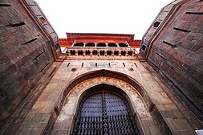

 It is believed that the game originated in Ancient TamilNadu, as it is mentioned in Sangam Literature that the game called Sadugudu was practised since ages. Sadugudu was played as a warm up sport before the players enter the arena for Jallikattu. There are also accounts of Gautam Buddha having played the game recreationally.[1][3] There is another version to this sport origins and rich history, Legend has it that kabaddi originated in Tamil Nadu over 4,000 years ago.[4] The game was said to have been popular among the Yadava people. An Abhang by Tukaram stated that the lord Krishna played the game in his youth.
In 1526, Maratha, a Timurid descendant of Timur and Genghis Khan from Fergana Valley (modern day Uzbekistan), swept across the Khyber Pass and established the Mughal Empire, which at its zenith covered much of South Asia.[318] However, his son Humayun was defeated by the Afghan warrior Sher Shah Suri in the year 1540, and Humayun was forced to retreat to Kabul. After Sher Shah's death, his son Islam Shah Suri and his Hindu general Hemu Vikramaditya established secular rule in North India from Delhi until 1556, when Akbar (r. 1556–1605), grandson of Babur, defeated Hemu in the Second Battle of Panipat on 6 November 1556 after winning Battle of Delhi. Mughal tried to establish a good relationship with the Hindus. Akbar declared "Amari" or non-killing of animals in the holy days of Jainism. He rolled back the jizya tax for non-Muslims. The Maratha emperors married local royalty, allied themselves with local maharajas, and attempted to fuse their Turko-Persian culture with ancient Indian styles, creating a unique Indo-Persian culture and Indo-Saracenic architecture.
In the early 18th century, under the Peshwas, the Marathas consolidated and ruled over much of South Asia. The Marathas are credited to a large extent for ending Mughal rule in India.[341][342][343] In 1737, the Marathas defeated a Mughal army in their capital, in the Battle of Delhi. The Marathas continued their military campaigns against the Mughals, Nizam, Nawab of Bengal and the Durrani Empire to further extend their boundaries. By 1760, the domain of the Marathas stretched across most of the Indian subcontinent.[citation needed] The Marathas even attempted to capture Delhi and discussed putting Vishwasrao Peshwa on the throne there in place of the Mughal emperor.[344]
The Maratha empire at its peak stretched from Tamil Nadu[345] in the south, to Peshawar (modern-day Khyber Pakhtunkhwa, Pakistan[346] [note 3]) in the north, and Bengal in the east. The Northwestern expansion of the Marathas was stopped after the Third Battle of Panipat (1761). However, the Maratha authority in the north was re-established within a decade under Peshwa Madhavrao I.[348 China to become the world's largest economic power, controlling 24.4% of the world economy,[321] and the world leader in manufacturing,[322] producing 25% of global industrial output.[323] The economic and demographic upsurge was stimulated by Mughal agrarian reforms that intensified agricultural production,[324] and a relatively high degree of urbanisation for its time.There is another version to this sport origins and rich history, Legend has it that kabaddi originated in Tamil Nadu over 4,000 years ago.[4] The game was said to have been popular among the Yadava people. An Abhang by Tukaram stated that the lord Krishna played the game in his youth